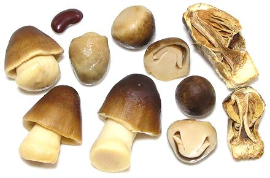

Straw Mushrooms

[Thai straw mushroom, Paddy Straw Mushroom, Volvariella volvacea]
These are grown on rice straw and are not yet widely available fresh even
in California. They are, however, available canned in stores catering to
Asian communities. Caution: Mistaking the almost
identical but highly toxic death cap (Amanita phalloides) for
straw mushrooms has resulted in death and/or need for liver transplants
among Asian immigrants to the US and Australia.
Straw mushrooms are canned in two forms: egg shaped with the cap and
stem still completely encapsulated by a shroud called the volva, or
partially opened with a conical cap on a short thick stem. These are
called "unpeeled" and "peeled" on the can but the "peeled" is just a more
mature form of the "unpeeled". The unpeeled can be much larger than the
one in the photo. They are also available dried (right in photo) but not
so commonly. Straw Mushrooms are very important in Southeast Asian
cuisines, particularly Thai. In Vietnam they may be found growing wild
on old termite mounds. These are much stronger in flavor than cultivated
and fetch a much higher price.
More on Mushrooms.
Buying:
These are available canned in almost all markets
serving East Asian and especially Southeast Asian communities. They are
commonly packed in 15oz/425gm net weight cans. Drained weight will vary
from 7oz/200gm to 8oz/225gm. Recipes should always call for drained
weight but sometimes they call out by the can (1 can, 1/2 can). That
will always be the 15oz can.
Storing:
In an unopened can they will keep for a a couple
of years without problems. Once the can is opened put them in a tightly
sealed jar in the refrigerator covered with the liquid from the can and
they will last a week or so.
Cooking:
Straw mushrooms are almost always cooked (and
canned ones are already lightly cooked in the canning process). Peeled
straw mushrooms are generally used in soups because they're too fragile
for stir fries and the like. Unpeeled work fine in stir fries, especially
since they're always added right near the end. Canned mushrooms require
only momentary cooking to bring them up to temperature. When using the
unpeeled they present a more interesting effect if cut in half lengthwise
as shown in the photo. If you get them at just the right stage they look
like happy alien faces.
Dried straw mushrooms aren't common, but are available in larger Asian
markets. They are somewhat different (a little more intense) in flavor,
but still recognizable as straw mushrooms. Soak them in hot water for 1/2
hour before cooking with them, and do use the soaking liquid in the
recipe, it is quite good.
fu_strawz 081026 - www.clovegarden.com
©Andrew Grygus - agryg@clovegarden.com - Photos
on this page not otherwise credited © cg1
- Linking to and non-commercial use of this page permitted